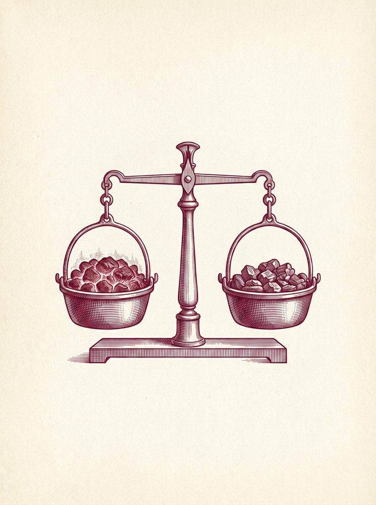
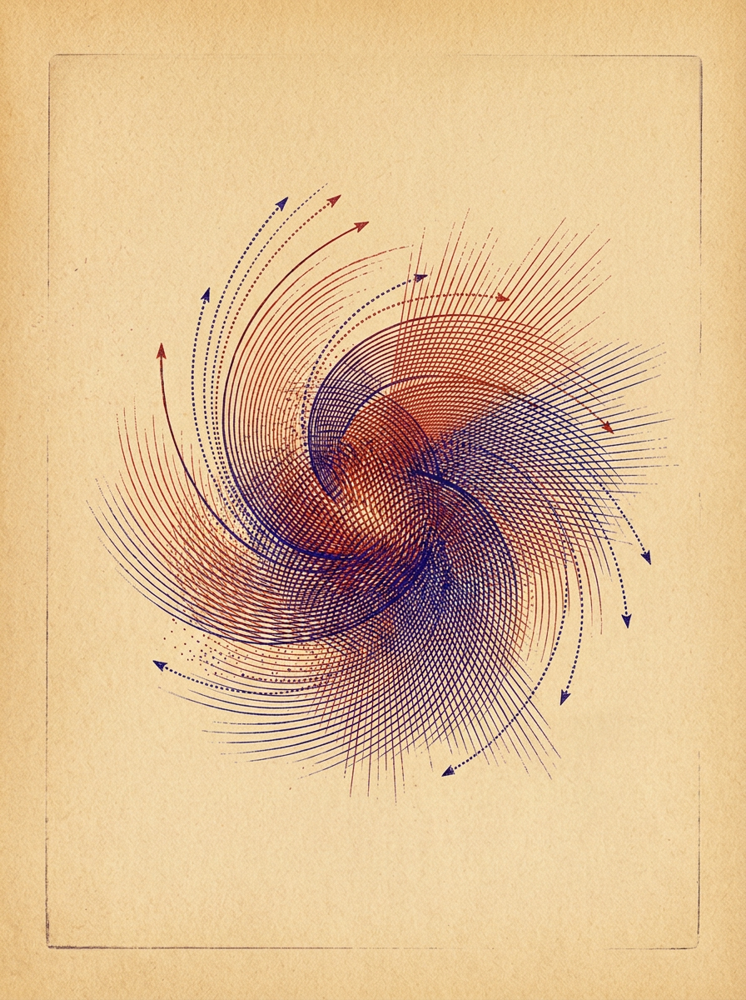
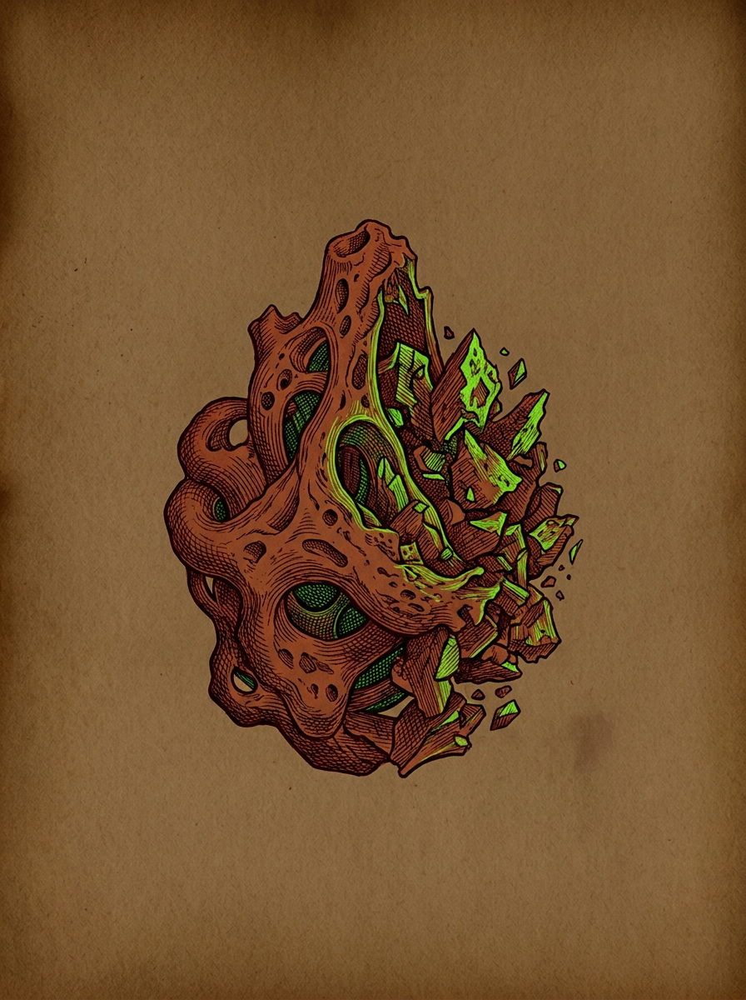
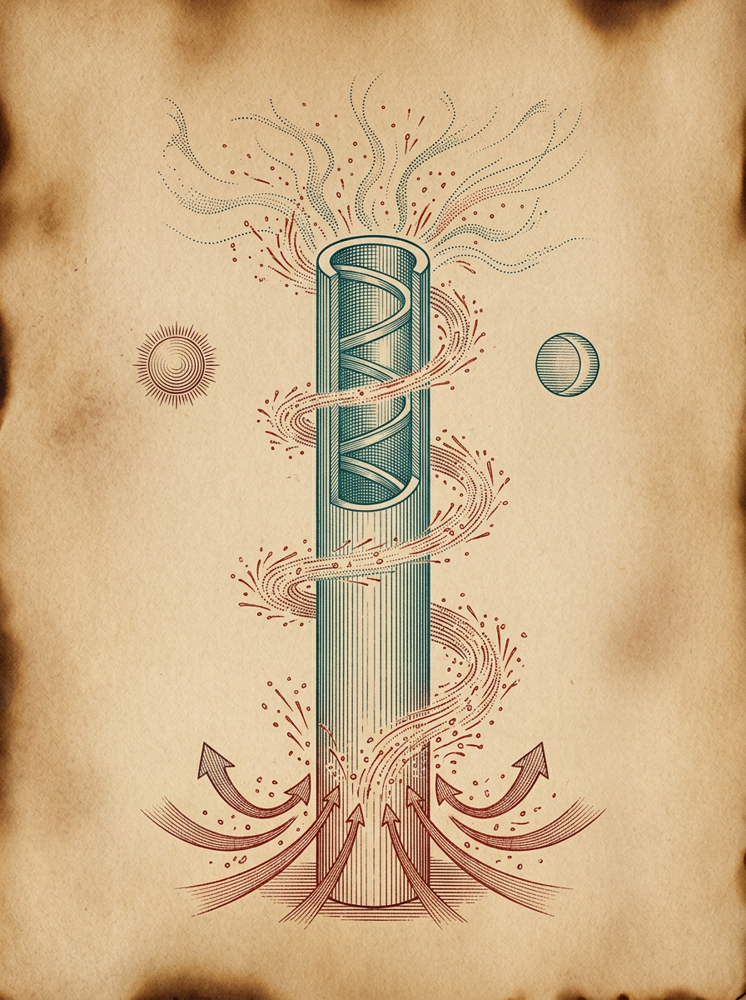
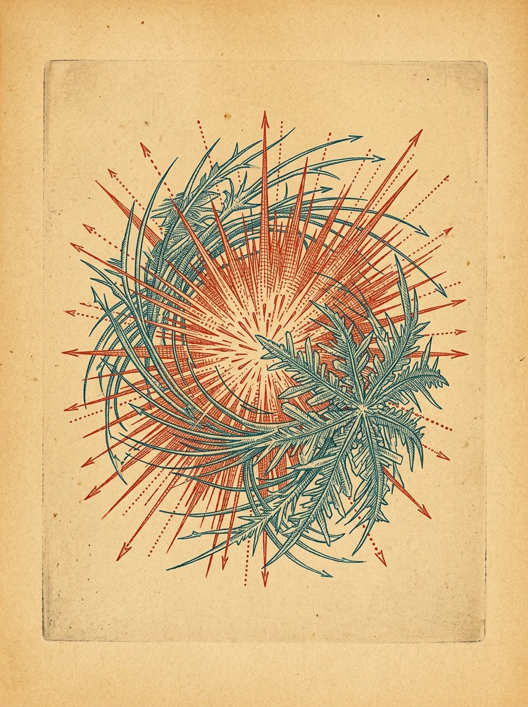
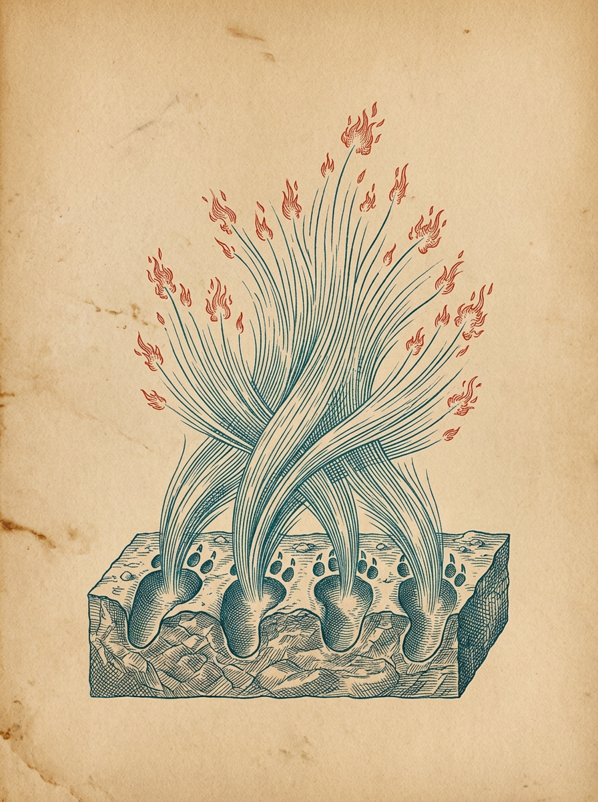
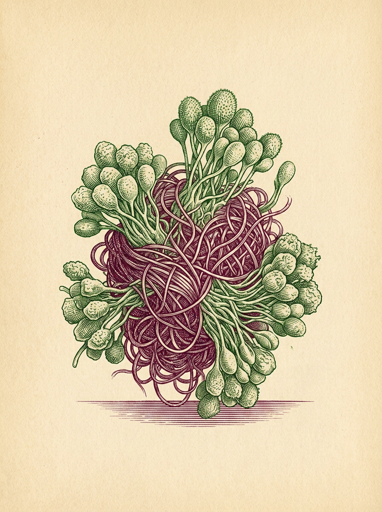

<!doctype html><meta charset="utf-8"><title>T015 v4 canonical-shard-1-r01</title><main><figure><figcaption>forge__burn_01__tool_07</figcaption></figure>
<figure><figcaption>forge__burn_01__wash_04</figcaption></figure>
<figure><figcaption>forge__burn_03__ore_rot</figcaption></figure>
<figure><figcaption>forge__burn_05__odd_02</figcaption></figure>
<figure><figcaption>forge__burn_05__still_01</figcaption></figure>
<figure><figcaption>forge__burn_05__still_03</figcaption></figure>
<figure><figcaption>forge__join_01__rot_03</figcaption></figure></main>
